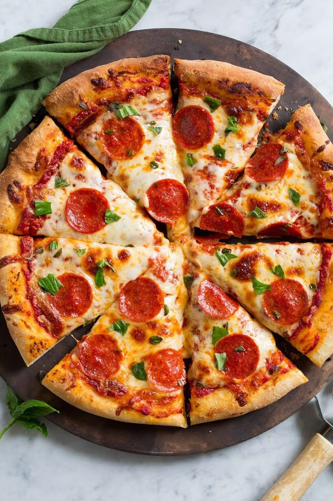
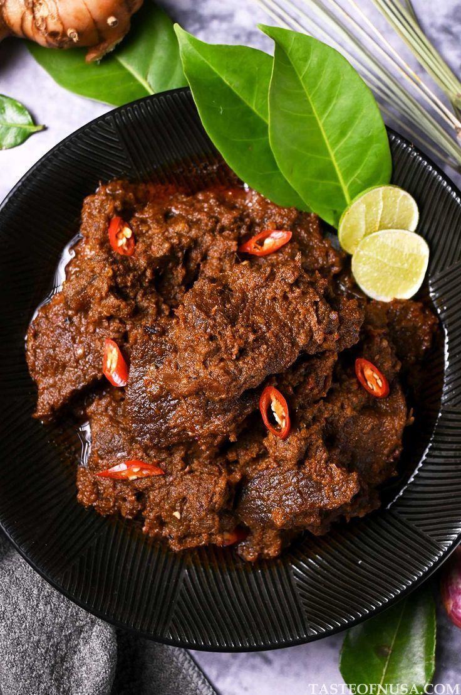

Penawaran Terbaik Minggu Ini

chicken wings
Fried wings with saus nabline menciptakan rasa gurih pedas meresap hingga ke dalam, yang membuat setiap gigitan makin nagih. Cocok untuk dinikmati ramai-ramai bersama teman atau keluarga.

Peking Duck
Bebek panggang berkulit renyah ala oriental, dipadukan dengan saus manis gurih. Penyajian khasnya membuat menu ini terasa mewah dan sempurna untuk disantap bersama yang tersayang

Pepperoni
Pizza tipis renyah dengan keju leleh dan pepperoni sapi gurih, sedikit pedas. Kombinasi rasa gurih dan smoky membuatnya menjadi menu sharing favorit segala suasana

Beef Rendang
Rendang daging empuk dengan bumbu rempah Nusantara yang kaya rasa. Cocok disantap dengan nasi hangat yang selalu berhasil membuat kumpul di meja makan